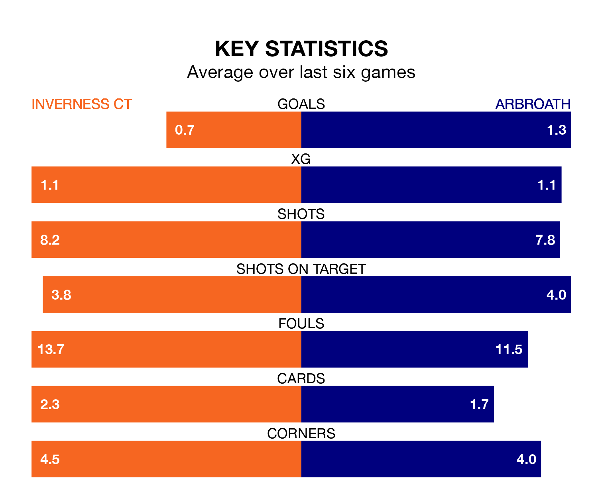

Saturday's match at the Tulloch Caledonian Stadium sees the league's two bottom sides face each other, as Inverness CT host rock-bottom Arbroath.
Inverness CT have picked up 32 points from their first 32 Championship games, with seven wins and 11 draws.
That is nine points more than Arbroath have collected, having won six and drawn five.
Inverness CT are in disappointing form in the Championship, with one win and three draws from their last six games.
With a win and five losses over that period, Arbroath's form is worse – they have taken three points from 18, compared to ICT's six.
In the last 10 years, Inverness CT and Arbroath have played each other on 21 occasions. Inverness CT won nine of them, Arbroath five, and they drew seven times.
On average, ICT scored 1.5 goals and Arbroath 0.9 in those matches.
Their last meeting was on February 24, when they played out a 1-1 draw.
The home team's Cameron Harper is among the league's most creative players, racking up nine assists in 31 appearances so far this season, and holding third spot in the Championship's assist charts.
For the visitors, Scott Stewart and Michael McKenna have set up the most goals, having laid on three assists apiece to date.
With 33 goals in 31 games so far this season, Arbroath are the league's lowest scorers with 1.1 goals per game. And they are conceding more than average, letting in 70 goals at a rate of 2.3 per game.
Inverness CT are also below average scorers, with 1.1 goals per game, compared to a league average of 1.4. They have conceded 1.2 goals per game.
Inverness CT's last match was on Saturday, a 1-0 loss against Partick Thistle.
Arbroath lost 2-1 against Airdrieonians last time out, on Tuesday, with Jay Bird on the scoresheet.
Saturday's match will be refereed by Colin Steven, who has taken charge of eight Championship games so far this season, issuing no red cards and booking 18 players. He has not awarded any penalties.
The last Inverness CT game Steven refereed was a 0-0 home draw with Greenock Morton on December 30. His last Arbroath match was their 6-0 loss away at Queen's Park on February 27.
Updated: 16:41 (UTC), 04/04/24